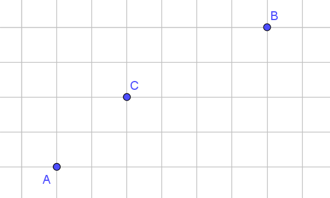

Ressources mathématiques > Base de données d'exercices > Exercices de dénombrement - probabilités - statistiques >
Exercices corrigés - Dénombrements (pratiques)
Dénombrements - cardinaux
Enoncé 
A leur entrée en L1, les étudiants choisissent une langue (anglais ou allemand) et une option (informatique, chimie ou astronomie).
Dans un groupe d'étudiants, 12 étudiants sont inscrits en astronomie, 15 en chimie, 16 étudient l'allemand. Par ailleurs, 8 inscrits en astronomie et 3 inscrits en informatique étudient l'anglais, 6 inscrits en chimie étudient l'allemand.
Indiquer la répartition des étudiants par discipline, ainsi que le nombre total d'étudiants dans le groupe.
Indiquer la répartition des étudiants par discipline, ainsi que le nombre total d'étudiants dans le groupe.


Enoncé
Dans une entreprise, il y a 800 employés. 300 sont des hommes, 352 sont membres d'un syndicat, 424 sont mariés, 188 sont des hommes syndiqués, 166 sont des hommes mariés, 208 sont syndiqués et mariés, 144 sont des hommes mariés syndiqués. Combien y-a-t-il de femmes célibataires non syndiquées?
Dénombrements - listes, arrangements, combinaisons, et variations
Enoncé
On trace dans un plan $n\geq 3$ droites en position générale (c'est-à-dire que deux droites ne sont jamais parallèles, et 3 droites ne sont jamais concourantes). Combien de triangles a-t-on ainsi tracé?
Enoncé
Une course oppose 20 concurrents, dont Émile.
- Combien y-a-t-il de podiums possibles?
- Combien y-a-t-il de podiums possibles où Émile est premier?
- Combien y-a-t-il de podiums possibles dont Émile fait partie?
- On souhaite récompenser les 3 premiers en leur offrant un prix identique à chacun. Combien y-a-t-il de distributions de récompenses possibles?
Enoncé
Dans une ville, il y a quatre boulangeries qui ferment un jour par semaine.
- Déterminer le nombre de façons d'attribuer un jour de fermeture hebdomadaire à chaque boulangerie.
- Déterminer le nombre de façons d'attribuer un jour de fermeture hebdomadaire à chaque boulangerie si plusieurs boulangeries ne peuvent fermer le même jour.
- Déterminer le nombre de façons d'attribuer un jour de fermeture hebdomadaire à chaque boulangerie si chaque jour, il doit y avoir au moins une boulangerie ouverte.
Enoncé
Dans une pièce, il y a deux tables. La première dispose de 3 chaises, numérotées de 1 à 3, la seconde dispose de 4 chaises,
numérotées de 1 à 4.
Sept personnes entrent. Combien y-a-t-il de possibilités de les distribuer autour de ces deux tables?
Exercice 7 - Addition, multiplication et combinaison ♡ [Signaler une erreur] [Ajouter à ma feuille d'exos]
Enoncé
Une entreprise comporte 18 employés, dont 8 femmes. Pour un sondage, on choisit 3 personnes au hasard. Quel est le nombre d'échantillons comportant au moins 2 hommes?
Enoncé
Un cadenas possède un code à $3$ chiffres, chacun des chiffres pouvant être un chiffre de $1$ à $9$.
-
- Combien y-a-t-il de codes possibles?
- Combien y-a-t-il de codes se terminant par un chiffre pair?
- Combien y-a-t-il de codes contenant au moins un chiffre $4$?
- Combien y-a-t-il de codes contenant exactement un chiffre $4$?
- Dans les questions suivantes, on souhaite que le code comporte obligatoirement trois chiffres distincts.
- Combien y-a-t-il de codes possibles?
- Combien y-a-t-il de codes se terminant par un chiffre impair?
- Combien y-a-t-il de codes comprenant le chiffre $6$?
Enoncé
On dispose de 4 hélicoptères de tourisme, de 4 pilotes et de 8 hôtesses de l'air. Combien de façons différentes y a-t-il d'attribuer les pilotes et hôtesses de l'air aux hélicoptères de manière que chaque hélicoptère ait un pilote et deux hôtesses de l'air ?
Enoncé
Fred et Émile font partie d'une équipe de $8$ joueurs ($6$ garçons et $2$ filles). On décide de fabriquer un comité de $3$ joueurs.
- Combien y-a-t-il de comités possibles?
- Combien y-a-t-il de comités contenant exactement $2$ garçons et $1$ fille?
- Combien y-a-t-il de comités contenant au moins deux garçons?
- On veut que Fred et Émile soient ensemble dans le comité. Combien y-a-t-il de comités possibles?
- On ne veut pas que Fred et Émile soient ensemble dans le comité. Combien y-a-t-il de comités possibles?
Enoncé
Les trois mousquetaires (donc quatre personnes avec d'Artagnan), ont mélangé leurs bottes dans le couloir de l'auberge. D'Artagnan se lève en premier et prend deux bottes au hasard.
- Combien de possibilités s'offrent à lui?
- Combien de choix a-t-il tels que les deux bottes forment une paire (une droite et une gauche quelconques)?
- Combien de choix a-t-il tels que les deux bottes appartiennent à deux personnes différentes?
Enoncé
Dans mon armoire, il y a 5 paires de chaussures noires, 3 paires de chaussures marrons et 2 paires de chaussures blanches. Je peux distinguer toutes ces chaussures les unes des autres. Un matin, mal réveillé, je choisis deux chaussures au hasard.
- Combien y-a-t-il de choix possibles ?
- Combien y-a-t-il de choix où j'obtiens deux chaussures de même couleur ?
- Combien de choix amènent un pied gauche et un pied droit ?
- Combien de choix amènent une chaussure droite et une chaussure gauche de même couleur ?
- Combien de choix amènent à deux chaussures qui ne sont pas de la même paire?
Enoncé
Soit $A$ l'ensemble des nombres à 7 chiffres ne comportant aucun "1". Déterminer le nombre d'éléments des ensembles suivants :
- $A$.
- $A_1$, ensemble des nombres de $A$ ayant 7 chiffres différents.
- $A_2$, ensemble des nombres pairs de $A$.
- $A_3$, ensemble des nombres de $A$ dont les chiffres forment une suite strictement croissante (dans l'ordre où ils sont écrits).
Enoncé
Lorsqu'on permute les lettres d'un mot, on obtient une anagramme de ce mot. On s'intéresse aux anagrammes du mot CLERMONT, sans tenir compte de la signification.
- Combien y-a-t-il d'anagrammes ?
- Combien y-a-t-il d'anagrammes commençant par la lettre $C$ ?
- Combien y-a-t-il d'anagrammes commençant par une consonne ?
Enoncé
Dénombrer les anagrammes des mots suivants : MATHS, RIRE, ANANAS.
Enoncé
De combien de façons différentes peut-on placer $p$ tours sur un échiquier de taille $n\times n$ de façon à
ce qu'elles ne puissent pas se prendre?
Enoncé
Un robot se déplace le long du quadrillage suivant :

Il part de $A$ et se rend en en $B$ en faisant une suite de mouvements d'un pas de gauche à droite ou d'un pas de bas en haut.
- Combien y-a-t-il de chemins possibles ?
- Combien y-a-t-il de chemins possibles passant par $C$ ?
Enoncé
Un tournoi de tennis comporte $2n$ joueurs. De combien de façons peut-on organiser le premier tour dans le cas où :
- on s’intéresse à la fois aux joueurs qui sont opposés et à l’ordre des matches ;
- on ne s’intéresse qu’à la connaissance des joueurs opposés.
Exercice 19 - Dénombrement de tirages successifs et simultanés, avec ou sans remise ♡ [Signaler une erreur] [Ajouter à ma feuille d'exos]
Enoncé
Un sac contient 5 jetons blancs et 8 jetons noirs. On suppose que les jetons sont discernables (numérotés par exemple) et on effectue un tirage de 6 jetons de ce sac.
- On suppose que les jetons sont tirés successivement en remettant à chaque fois le jeton tiré.
- Donner le nombre de résultats possibles.
- Combien de ces résultats amènent
- exactement 1 jeton noir ?
- au moins 1 jeton noir ?
- au plus un jeton noir ?
- 2 fois plus de jetons noirs que de jetons blancs ?
- Mêmes questions en supposant que les jetons sont tirés successivement sans remise.
- Mêmes questions en supposant que les jetons sont tirés simultanément.
Enoncé
Dans cet exercice, on attend des réponses qui ne sont pas des valeurs numériques, mais des expressions en termes de factorielles, sous la forme
la plus simple possible.
- Combien y-a-t-il de façons de répartir les 52 cartes d'un jeu entre 4 joueurs N, S, E, O, chacun possédant 13 cartes.
- Parmi ces façons, combien y-en-a-t-il qui sont telles que chaque joueur n'a qu'une seule couleur (par exemple, N a les 13 piques, S a les 13 coeurs,...)?
- Combien y-a-t-il de façons que deux joueurs quelconques aient chacun une seule couleur?
- Combien y-a-t-il de façons que deux partenaires, c'est-à-dire (N,S) ou (E,O), aient chacun une seule couleur, les deux autres partenaires ayant des cartes quelconques.
Enoncé
Une main au poker est formée de 5 cartes extraites d'un jeu de 52 cartes. Traditionnellement,trèfle, carreau, coeur, pique sont appelées couleurs et les valeurs des cartes sont rangées dans l'ordre : as, roi, dame, valet, 10, 9, 8, 7, 6, 5, 4, 3, 2, de la plus forte à la plus faible. Dénombrer les mains suivantes :
- quinte flush : main formée de 5 cartes consécutives de la même couleur (Attention! la suite as, 2, 3, 4 et 5 est une quinte flush).
- carré : main contenant 4 cartes de la même valeur (4 as par exemple).
- full : main formée de 3 cartes de la même valeur et de deux autres cartes de même valeur (par exemple, 3 as et 2 rois).
- quinte : main formée de 5 cartes consécutives et qui ne sont pas toutes de la même couleur.
- brelan : main comprenant 3 cartes de même valeur et qui n'est ni un carré, ni un full (par exemple, 3 as, 1 valet, 1 dix).
Enoncé
On tire simultanément 5 cartes d'un jeu de 32 cartes. Combien de tirages différents peut-on obtenir :
- sans imposer de contraintes sur les cartes.
- contenant 5 carreaux ou 5 piques.
- contenant 2 carreaux et 3 piques.
- contenant au moins un roi.
- contenant au plus un roi.
- contenant exactement 2 rois et exactement 3 piques.
Enoncé
On souhaite ranger sur une étagère 4 livres de mathématiques (distincts), 6 livres de physique, et 3 de chimie. De combien de façons peut-on effectuer ce rangement :
- si les livres doivent être groupés par matières.
- si on exige seulement que les livres mathématiques soient groupés (les livres des autres disciplines pouvant l'être ou non).
Enoncé
Soit $p$ points du plan distincts.
- Combien de polygones à $n\leq p$ côtés peut-on réaliser à partir de ces points?
- On fixe un tel polygone à $n$ côtés. Combien de diagonales ce polygone comporte-t-il?
Dénombrements - autres dénombrements
Enoncé
Une table ronde comporte cinq places, numérotées de 1 à 5. On veut répartir Adélie, Brigitte, Chafik, Denis et Emilie autour de la table. Mais attention! Denis et Émilie ne s'entendent pas du tout, et il ne faut pas les placer côte à côte!!! Combien y-a-t-il de dispositions possibles?
Enoncé
Soit $n$ un entier non nul. On désigne par $u_n$ le nombre de listes de $n$ termes, chaque terme étant $0$ ou $1$, et n'ayant pas deux termes $1$ consécutifs.
- Que vaut $u_1$? $u_2$?
- Démontrer que, pour tout $n\geq 3$, on a $u_n=u_{n-1}+u_{n-2}$.
- Écrire un algorithme permettant de calculer $u_{20}$.
- Application : un concours comporte vingt questions, numérotées de 1 à 20. On a constaté que, parmi les 17712 personnes ayant participé au concours, aucune n'a répondu juste à deux questions consécutives. Peut-on affirmer que deux candidats au moins ont répondu de la même manière au questionnaire, c'est-à-dire juste aux mêmes questions et faux aux mêmes questions?
Enoncé
Dans ma maison, il y a un escalier de 17 marches. Pour descendre cet escalier, je peux à chaque pas descendre une marche, descendre deux marches, ou descendre trois marches à la fois. Combien y-a-t-il de façons de descendre cet escalier?
Dénombrement - principe des tiroirs
Enoncé
On considère 51 entiers (distincts!) compris entre $1$ et $100$. Démontrer que parmi ces entiers, il y en a deux qui sont consécutifs.
Enoncé
On considère un ensemble $X$ de $n+1$ entiers (distincts) choisis dans $\{1,\dots,2n\}$. Démontrer que parmi les éléments de $X$, on peut toujours trouver $2$ entiers dont la somme fait $2n+1$.
Exercice 30 - Somme d'entiers divisible par $n$ ♡ [Signaler une erreur] [Ajouter à ma feuille d'exos]
Enoncé
Soit $k\geq 2$ et $n_1,\dots,n_k$ $k$ entiers relatifs (pas nécessairement distincts). Montrer qu'on peut toujours choisir certains de ces entiers de sorte que la somme soit divisible par $k$.
Dénombrement et cryptographie
Enoncé
Le disque de l'armée mexicaine est un outil de cryptographie utilisé par l'armée mexicaine au début du XXiè siècle. Il est constitué de 5 disques de diamètres différents, empilés les uns sur les autres, et qui peuvent tourner les uns par rapport aux autres. Chaque disque est partagé en 26 parts. Sur le bord du plus grand disque, on écrit les 26 lettres, de A à Z. Sur le bord du second disque, on écrit les 26 nombres 01,02,…,26. Sur le bord du troisième disque, on écrit 27,…,52, sur le bord du quatrième disque, 53,…78, et enfin sur le bord du plus petit dique, 79,…,99, et 00 (il reste 4 secteurs sans nombre sur le plus petit disque).
On convient alors d'une clé, qui est un mot de 4 lettres, par exemple FRED. On fait alors coïncider alors le plus petit nombre du deuxième disque, à savoir 01, avec la première lettre de la clé, ici F. On fait de même tourner le troisième disque pour faire coïncider son plus petit nombre, 27, en face de la deuxième lettre de la clé, R, et ainsi de suite pour les deux autres disques.
Pour chiffrer un message, on remplace alors une lettre par l'un des 3 ou 4 nombres qui lui fait face sur le disque. Avec l'exemple précédente, on pourrait remplacer E par 26, 40, 53 ou 80.
Combien-y-a-t-il de clés possibles pour cette méthode de chiffrement?
On convient alors d'une clé, qui est un mot de 4 lettres, par exemple FRED. On fait alors coïncider alors le plus petit nombre du deuxième disque, à savoir 01, avec la première lettre de la clé, ici F. On fait de même tourner le troisième disque pour faire coïncider son plus petit nombre, 27, en face de la deuxième lettre de la clé, R, et ainsi de suite pour les deux autres disques.
Pour chiffrer un message, on remplace alors une lettre par l'un des 3 ou 4 nombres qui lui fait face sur le disque. Avec l'exemple précédente, on pourrait remplacer E par 26, 40, 53 ou 80.
Combien-y-a-t-il de clés possibles pour cette méthode de chiffrement?
Enoncé
Les grilles tournantes, mises au point par le colonel Fleissner, servirent pour une méthode de cryptographie qui fut utilisée par les allemands
lors de la Première Guerre Mondiale. Une telle grille est constituée par un carré de côté 6. On divise ce carré en une grille de 36 petits carrés égaux
(tous de côté 1), et on ôte 9 de ces carrés. La propriété suivante doit être vérifiée : les trous que l'on obtient avec la grille en position initiale,
avec la grille tournée d'un quart de tour, d'un demi-tour ou de trois quart de tour ne se superposent jamais. Ainsi, les 36 positions peuvent être occupées par un trou après éventuellement une rotation de la grille d'un quart, d'un demi ou de trois-quart de tour.
- Combien peut-on fabriquer de telles grilles?
- Pour quelles valeurs de $n$ peut-on fabriquer une grille de Fleissner de côté $n$? Combien de telles grilles peut-on alors fabriquer?